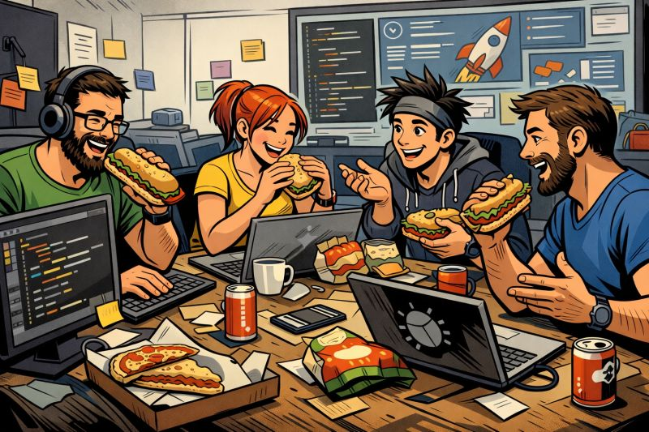

Equipos y líderes
April 10, 2026 | ES
 Miguel García
Miguel García
¿Por qué siempre se habla sobre qué es un líder? ¿En qué lugar queda el equipo?
Se ha hablado mucho (y lo que te rondaré, morena, con permiso del hype de la IA) sobre ¿qué es un líder? ¿cómo ha de comportarse? ¿qué cualidades cuasi mágicas se le atribuyen?
Sin embargo, se habla poco de qué es un equipo, no digamos ya de cómo debería comportarse un "liderado" (palabro al canto).
De esto último ya hablaré en algún momento, o no, depende de cómo esté el día, aunque ganas tengo desde hace ya unos cuantos años, pues mucho hay que contar desde varias barreras, no solo desde una (la de siempre).
Lo cierto es que tampoco voy a hablar de lo que es para mí un equipo. Es más, hoy casi no tengo ganas de contar nada. Pero me voy a obligar un poquito, porque creo que es lo justo.
- Fulanito, producción está petando que da gusto, échale un ojo, pero ya.
- ¡Buah, chaval! Me pongo a ello.
- ¿Cómo va eso? Tengo cuatro emails, dos Whatsapp, tres llamadas, seis Teams y ocho tickets de soporte preguntando por lo mismo. Y es hora de almorzar.
- Ya se qué pasa. ¿Te acuerdas del bugfix de la consulta de los clientes cuyo nombre empieza por H? Pues no está en la rama de producción que hemos subido esta mañana.
- Jopé, Fulanito, mira que te dije que tenía que ir sí o sí. Venga, haz el merge y p'arriba. Que nos cierran el bar y tendremos que ir al super.
- Ya está, subido y furulando bien. Perdona, no volverá a pasar, te lo prometo, me lo voy a apuntar y...
- Lo mismo dijiste la semana pasada, y mira. Recuérdamelo en la próxima revisión de desempeño semestral, que a mí se me va a olvidar y tendré que echarte la bronca, digo yo. El mío de habas con longanizas.
Esta conversación, totalmente ficticia, aunque se da habitualmente (¿¡what!?), forma parte del devenir diario de un equipo, tal y como yo lo concibo.
No, no me refiero a equivocarse, aunque todo el mundo lo hace, yo el primero, somos humanos, es lo que hay, aunque nuestra intención siempre ha de ser hacer las cosas bien, aprender de los errores y mejorar.
Me refiero al toma y daca, a estar disponible para liarse la manta a la cabeza, a arremangarse y rebuscar en el código, a tener al cliente siempre presente, a echar una mano a quien sea. A que el resultado de nuestro trabajo en equipo, sea nuestro escaparate.
Tengo la inmensa suerte de contar o haber contado, con profesionales excepcionales en el equipo del que formo parte, que además son buena gente. O al revés, que para el caso es lo mismo.
Los proyectos en los que trabajamos son el reflejo de nuestra profesionalidad, nuestro escaparate. Estoy muy orgulloso del trabajo realizado, de lo que hemos conseguido. Y de lo que hemos crecido. Ver cómo Fulanito y Sotanita, casi salidos del huevo cuando llegaron, ahora se los rifan, es para mí un orgullo. Se lo han ganado. Lo valen.
El equipo es como el universo, se expande, siempre está en movimiento. Ahora aquí, luego allá, alguien entra, alguien sale, pero la conexión no se rompe, siempre está ahí.
Gracias por dejarme formar parte del equipo.

Créditos imagen: ChatGPT y un servidor.